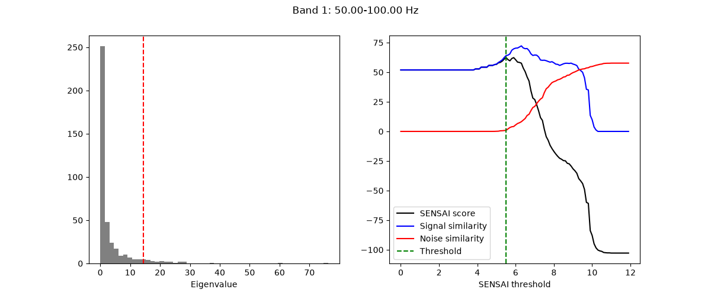
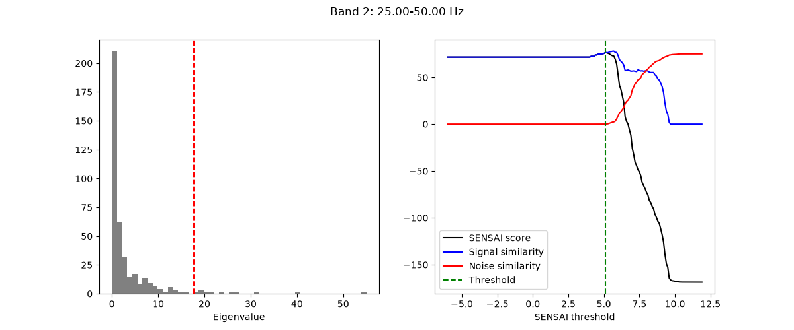
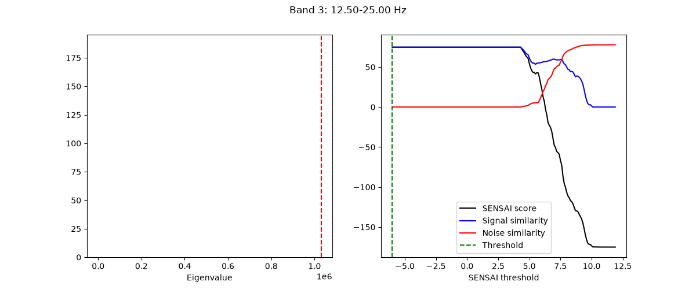
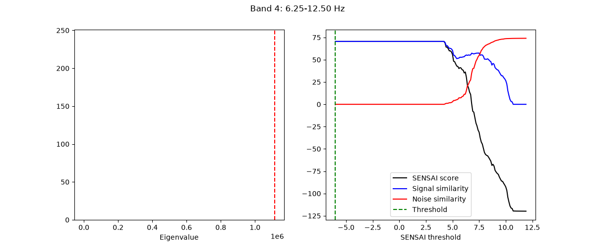
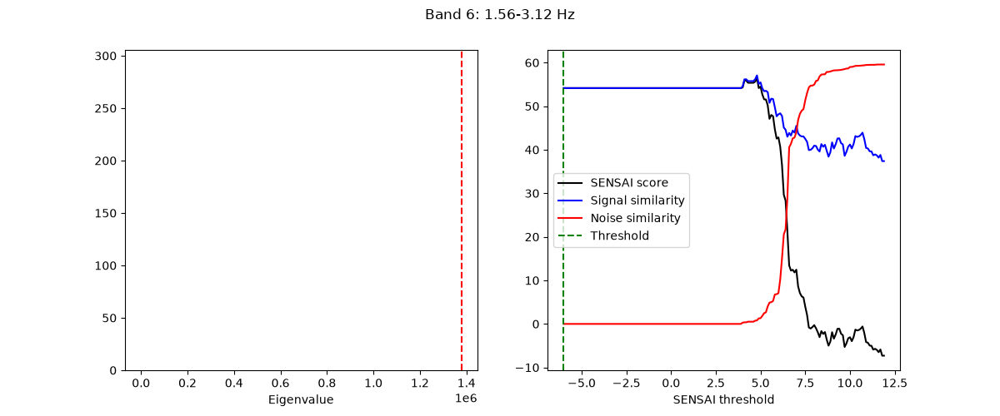
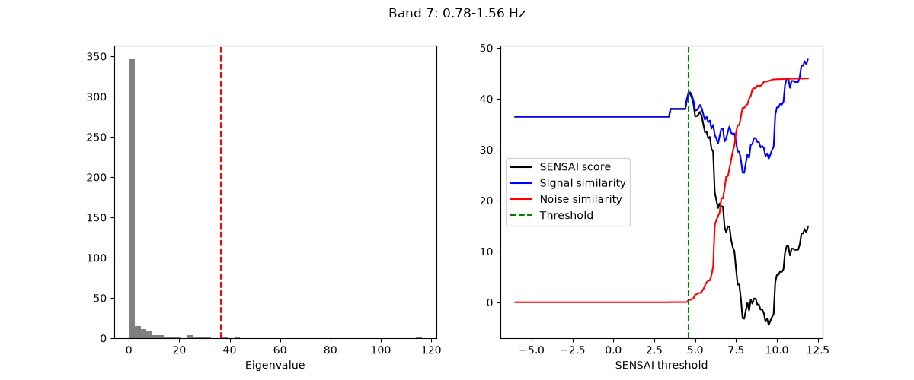
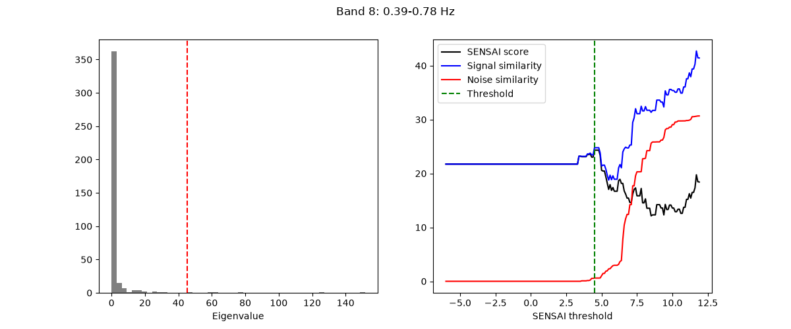
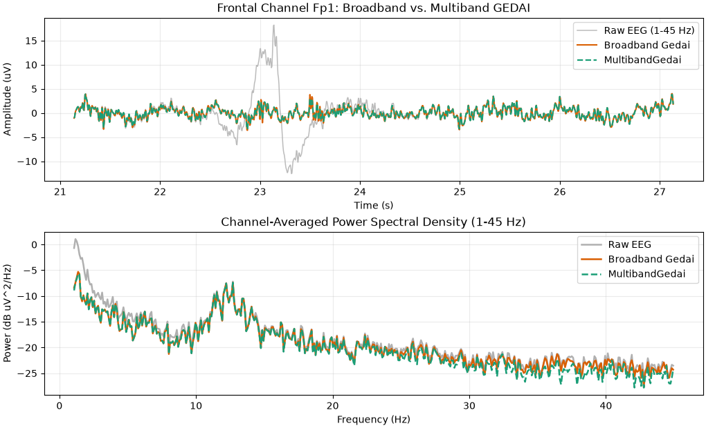
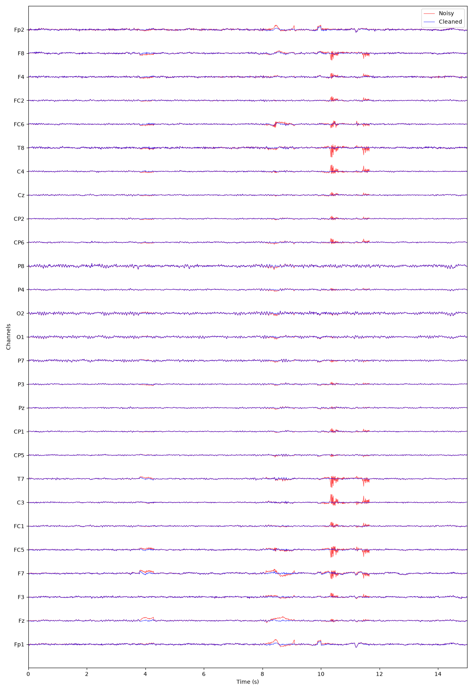

Note
Go to the end to download the full example code.
Understanding the multiband extension of GEDAI🔗
This tutorial demonstrates how to use MultibandGedai and
why splitting cleaning across frequency subbands improves over a single
broadband GED pass.
MultibandGedai decomposes each channel into wavelet subbands using the
Maximal Overlap Discrete Wavelet Transform (MODWT), fits an independent GEDAI
threshold per subband, and reconstructs the cleaned signal.
Note
This tutorial focuses on the parameters and behavior of
MultibandGedai. For a ready-to-copy offline
pipeline template, see the
Practical Pipelines section.
import matplotlib.pyplot as plt
import numpy as np
from mne.io import read_raw
from gedai import Gedai, MultibandGedai
from gedai.data import get_contaminated_eeg_set_path
from gedai.viz import plot_mne_style_overlay_interactive
n_jobs = 1
raw = read_raw(str(get_contaminated_eeg_set_path()), preload=True)
For simplicity, we use only the first 30 seconds of the data in this tutorial. In practice, fitting on the full recording helps capture rare artifacts.
raw.crop(0, 30)
MultibandGedai Parameters🔗
By default, wavelet_level="auto" computes the number of MODWT levels from
the sampling frequency and low-frequency cutoff.
Broadband Pass (Two-Pass Filtering):🔗
Setting broadband_pass=True enables a two-stage hierarchical workflow:
Pass 1 (Broadband Pass): A full-spectrum spatial GEDAI filter removes large, widespread artifacts (such as eye blinks or gross jaw bursts) so high-amplitude energy does not leak into neighboring wavelet bands.
Pass 2 (Multiband Wavelet Pass): Each MODWT subband receives its own SENSAI eigenvalue threshold tuned to the spectral mix of that band.
multiband_gedai = MultibandGedai(
wavelet_type="haar",
wavelet_level="auto",
broadband_pass=True,
)
Model Fitting🔗
fit_raw() segments each wavelet band into
fixed 2.0 s epochs, optimizes band-specific SENSAI thresholds, and
automatically excludes bad channels via on_bad_channel="exclude".
multiband_gedai.fit_raw(
raw,
duration=2.0,
strength="auto",
on_bad_channel="exclude",
bad_channel_threshold="auto",
n_jobs=n_jobs,
verbose=True,
)
print(multiband_gedai.summary)
343 x 343 full covariance (kind = 1) found.
[_utils._check_reference_channel] WARNING: Input data does not contain a flat reference channel. GEDAI will apply average referencing. Consider adding the reference channel(s) using :func:`mne.add_reference_channels` before using GEDAI.
[_utils._apply_eeg_average_reference_if_needed] INFO: Setting average reference.
EEG channel type selected for re-referencing
Applying average reference.
Applying a custom ('EEG',) reference.
[multiband.fit_raw] INFO: Applying wavelet HP pre-filter (sub-0.10 Hz)...
[multiband.fit_raw] INFO: Running broadband GEDAI pass...
[_utils._check_reference_channel] WARNING: Input data does not contain a flat reference channel. GEDAI will apply average referencing. Consider adding the reference channel(s) using :func:`mne.add_reference_channels` before using GEDAI.
==================================================================================
MultibandGedai Summary Table
==================================================================================
Frequency Band | Epoch (s) | Threshold | SENSAI (%) | ENOVA (%)
---------------------------+------------+------------+-------------+-----------
Pass 1: Broadband | 1.00 s | 17.38 | 73.64 % | --
Band 0 (50.00-100.00 Hz) | 2.00 s | 14.43 | 62.40 % | --
Band 1 (25.00-50.00 Hz) | 2.00 s | 17.76 | 76.31 % | --
Band 2 (12.50-25.00 Hz) | 2.00 s | 1.03e+06 | 74.78 % | --
Band 3 (6.25-12.50 Hz) | 2.00 s | 1.114e+06 | 70.50 % | --
Band 4 (3.12-6.25 Hz) | 2.00 s | 1.005e+06 | 70.68 % | --
Band 5 (1.56-3.12 Hz) | 2.00 s | 1.378e+06 | 54.15 % | --
Band 6 (0.78-1.56 Hz) | 2.00 s | 36.47 | 40.93 % | --
Band 7 (0.39-0.78 Hz) | 2.00 s | 45.17 | 24.32 % | --
Band 8 (0.00-0.39 Hz) | 2.00 s | 1.252 | 29.03 % | --
==================================================================================
Fitted SENSAI Optimization Score: 55.90 %
==================================================================================
Note
The Haar MODWT operates on arbitrary even epoch sample counts (as long as
there are enough samples per epoch for covariance estimation) without
requiring power-of-two window lengths. Setting wavelet_low_cutoff to
"auto" or to your high-pass cutoff skips subbands below the signal
bandwidth. MultibandGedai also supports reference ("average",
"REST", "M1+M2", "Cz"), adaptive Z3 strength presets
("auto" = 7, "auto+" = 8, "auto-" = 6, or
0-10), smoothing_window, and bad_epoch_threshold
("BAD_gedai").









Transform the Data (Denoising)🔗
transform_raw() denoises each subband with
dual-stream cosine overlap-add blending (50% shifted streams) to eliminate
boundary discontinuities before recombining the bands.
denoised_raw = multiband_gedai.transform_raw(
raw,
interpolate_bads=bool(multiband_gedai.bad_channels_),
n_jobs=n_jobs,
verbose=False,
)
print(
f"MultibandGedai -> Mean ENOVA: "
f"{multiband_gedai.metrics_['mean_enova'] * 100:.1f} % | "
f"SENSAI score: {multiband_gedai.metrics_['sensai_score']:.3f}"
)
[_utils._check_reference_channel] WARNING: Input data does not contain a flat reference channel. GEDAI will apply average referencing. Consider adding the reference channel(s) using :func:`mne.add_reference_channels` before using GEDAI.
MultibandGedai -> Mean ENOVA: 30.3 % | SENSAI score: 60.139
Why Multiband Beats Single-Band Broadband GEDAI🔗
Low-frequency artifacts (blinks, slow movement drifts) and high-frequency
artifacts (EMG, line harmonics) have completely different spatial-to-brain
power ratios. A single broadband Gedai threshold must
compromise across all frequencies at once, whereas MultibandGedai targets
each subband independently.
broadband_gedai = Gedai()
broadband_gedai.fit_raw(
raw,
duration=2.0,
strength="auto",
on_bad_channel="exclude",
bad_channel_threshold="auto",
n_jobs=n_jobs,
verbose=False,
)
broadband_denoised = broadband_gedai.transform_raw(
raw,
interpolate_bads=bool(broadband_gedai.bad_channels_),
n_jobs=n_jobs,
verbose=False,
)
raw_ref = raw.copy().set_eeg_reference("average", projection=False, verbose=False)
raw_bp = raw_ref.copy().filter(1.0, 45.0, verbose=False).get_data()
bb_bp = broadband_denoised.copy().filter(1.0, 45.0, verbose=False).get_data()
mb_bp = denoised_raw.copy().filter(1.0, 45.0, verbose=False).get_data()
sfreq = float(raw.info["sfreq"])
fp1_idx = raw.ch_names.index("Fp1")
seg_len = int(round(6.0 * sfreq))
peak_idx = int(np.argmax(np.abs(raw_bp[fp1_idx])))
st = max(0, min(peak_idx - seg_len // 3, raw_bp.shape[1] - seg_len))
sl = slice(st, st + seg_len)
t_seg = np.arange(st, st + seg_len) / sfreq
psd_kw = dict(fmin=1.0, fmax=45.0, verbose=False)
psd_raw = raw_ref.compute_psd(**psd_kw)
psd_bb = broadband_denoised.compute_psd(**psd_kw)
psd_mb = denoised_raw.compute_psd(**psd_kw)
fig_cmp, axes_cmp = plt.subplots(2, 1, figsize=(10.2, 6.2), constrained_layout=True)
axes_cmp[0].plot(
t_seg,
raw_bp[fp1_idx, sl] * 1e6,
color="#b0b0b0",
linewidth=1.1,
alpha=0.85,
label="Raw EEG (1-45 Hz)",
)
axes_cmp[0].plot(
t_seg,
bb_bp[fp1_idx, sl] * 1e6,
color="#d95f02",
linewidth=1.5,
label="Broadband Gedai",
)
axes_cmp[0].plot(
t_seg,
mb_bp[fp1_idx, sl] * 1e6,
color="#1b9e77",
linestyle="--",
linewidth=1.6,
label="MultibandGedai",
)
axes_cmp[0].set_title("Frontal Channel Fp1: Broadband vs. Multiband GEDAI")
axes_cmp[0].set_xlabel("Time (s)")
axes_cmp[0].set_ylabel("Amplitude (uV)")
axes_cmp[0].legend(loc="upper right", frameon=True)
axes_cmp[0].grid(alpha=0.25)
for label, psd_obj, color, ls in [
("Raw EEG", psd_raw, "#b0b0b0", "-"),
("Broadband Gedai", psd_bb, "#d95f02", "-"),
("MultibandGedai", psd_mb, "#1b9e77", "--"),
]:
mean_psd_db = 10.0 * np.log10(np.mean(psd_obj.get_data(), axis=0) * 1e12 + 1e-30)
axes_cmp[1].plot(
psd_obj.freqs,
mean_psd_db,
color=color,
linestyle=ls,
linewidth=1.8,
label=label,
)
axes_cmp[1].set_title("Channel-Averaged Power Spectral Density (1-45 Hz)")
axes_cmp[1].set_xlabel("Frequency (Hz)")
axes_cmp[1].set_ylabel("Power (dB uV^2/Hz)")
axes_cmp[1].legend(loc="upper right", frameon=True)
axes_cmp[1].grid(alpha=0.25)
plt.show()

[_utils._check_reference_channel] WARNING: Input data does not contain a flat reference channel. GEDAI will apply average referencing. Consider adding the reference channel(s) using :func:`mne.add_reference_channels` before using GEDAI.
[_utils._check_reference_channel] WARNING: Input data does not contain a flat reference channel. GEDAI will apply average referencing. Consider adding the reference channel(s) using :func:`mne.add_reference_channels` before using GEDAI.
[_utils._check_reference_channel] WARNING: Input data does not contain a flat reference channel. GEDAI will apply average referencing. Consider adding the reference channel(s) using :func:`mne.add_reference_channels` before using GEDAI.
SENSAI Manifold, ENOVA-Weighted PSD & Scalp Topography🔗
Calling plot_sensai displays Before/After epoch clustering against the
brain leadfield subspace alongside the ENOVA-weighted Welch PSD and the
spatial distribution of removed variance across channels.
multiband_gedai.plot_sensai(raw_before=raw, raw_after=denoised_raw, show=True)
![SENSAI = 55.9%, ENOVA = 30.3%, [MultibandGedai], Before Denoising Mean SSI: 0.72, After Denoising Mean SSSI: 0.89 | Mean NSSI: 0.41 SSI Silhouette Score: 0.97, ENOVA-weighted PSD over channels, ENOVA (Explained Noise Variance)](../../../_images/sphx_glr_10_gedai_multiband_011.png)
[_utils._check_reference_channel] WARNING: Input data does not contain a flat reference channel. GEDAI will apply average referencing. Consider adding the reference channel(s) using :func:`mne.add_reference_channels` before using GEDAI.
[_utils._apply_eeg_average_reference_if_needed] INFO: Setting average reference.
EEG channel type selected for re-referencing
Applying average reference.
Applying a custom ('EEG',) reference.
(<Figure size 1800x650 with 9 Axes>, {'ssi_before_mean': 0.7200546481811553, 'ssi_after_mean': 0.8855639149317225, 'ssi_noise_mean': 0.4138710142407555, 'signal_silhouette': 0.9732042855843751, 'ideal_power_target_db': 14.399162379224432, 'enova_per_channel': array([0.27962548, 0.41414857, 0.22067699, 0.32082877, 0.24483992,
0.16004267, 0.19859229, 0.27809304, 0.16589083, 0.20366289,
0.17984438, 0.21382862, 0.16859059, 0.12162561, 0.11238202,
0.18934821, 0.09088757, 0.23218638, 0.24483189, 0.16260578,
0.26520526, 0.27995843, 0.26204634, 0.13531867, 0.22120436,
0.23734523, 0.32571527]), 'psd_before_db': array([ -8.70803269, -0.30749615, 1.09663151, -0.2354668 ,
-2.6749835 , -6.36909771, -8.05487002, -8.44970392,
-10.33463046, -10.95135515, -11.47249505, -11.23761111,
-12.23510298, -13.07569211, -14.6803418 , -15.17203175,
-15.75879039, -16.57971224, -15.99225985, -15.45252482,
-15.32635412, -14.28866032, -12.45030856, -11.76289962,
-11.1133448 , -10.6796258 , -12.35514232, -13.58060774,
-14.74105146, -15.33231449, -16.10337949, -16.61292833,
-16.48545105, -16.74946095, -17.30545607, -17.89959854,
-18.12635418, -18.68378429, -18.49967133, -18.26927704,
-18.43993913, -18.18226349, -17.79482031, -18.13536312,
-17.70405362, -17.96689378, -17.67522576, -18.3043813 ,
-17.45125356, -17.60779106, -17.63457969, -18.09924289,
-18.53541278, -18.88078882, -18.99997464, -19.73407984,
-20.49824436, -20.1276867 , -21.12021749, -20.35818227,
-21.35238431, -21.35217913, -21.43762497, -20.38531781,
-20.35223274, -19.90756259, -18.61428187, -19.84183614,
-19.21247349, -19.61613432, -18.97366206, -20.50402686,
-20.58884743, -20.53309023, -19.78182336, -19.15197313,
-19.35496938, -18.7683866 , -18.2884058 , -18.9452844 ,
-18.58433591, -18.55935438, -18.61070173, -19.1206442 ,
-19.69001032, -20.5982298 , -20.71607809, -20.64506872,
-21.45879111, -21.50402206, -20.93167659, -20.5449637 ,
-20.7270334 , -20.11792273, -19.68782928, -20.53110987,
-21.03091678, -20.25257875, -19.31604014, -17.29977916,
-14.93276413, -17.04548869, -18.55966863, -19.72940502,
-20.49217696, -19.61998128, -21.40527397, -22.90556193,
-23.87716398, -25.26381975, -28.32738333, -28.42410982,
-30.67930334, -32.52163076, -34.9282205 , -35.99744735,
-37.16599059, -38.21616532, -38.66059026, -38.11543712,
-38.18947398, -39.0702406 , -38.95033852, -38.37687249,
-38.79550423, -39.13299191, -39.06331875, -38.91651155,
-38.90331046, -39.35127432, -39.33551915, -38.96565938,
-39.30985228, -39.62350272, -39.17835008, -39.2917437 ,
-39.78112059, -39.49726234, -39.28729667, -39.70228674,
-39.82078438, -39.68157221, -39.48312846, -39.62669365,
-40.29282349, -39.79963643, -39.30925487, -40.08102603,
-40.54461263, -39.7405996 , -39.47856248, -40.1771758 ,
-40.533501 , -39.87879723, -39.62771182, -40.26237725,
-40.70479597, -40.05945153, -39.58893268, -40.45013963,
-40.8804277 , -39.95879812, -39.84265424, -40.60362522,
-40.72266641, -40.11560041, -40.07216856, -40.54454658,
-40.72759416, -40.30919432, -40.10719247, -40.63456586,
-40.81958071, -40.16684244, -40.39433451, -40.85631343,
-40.39734275, -40.44813273, -40.67256218, -40.58920187,
-40.52807088, -40.50175265, -40.68035916, -40.81281389,
-40.40818729, -40.41537013, -41.05383601, -40.8026854 ,
-40.16743532, -40.62225058, -41.23717461, -40.60176513,
-40.27977337, -40.6508385 , -41.15139541, -40.81817294,
-40.13942457, -40.61060713, -41.39559585, -40.74445892,
-43.12022457]), 'psd_after_db': array([-18.28904669, -10.34271637, -8.31413414, -8.56132585,
-9.38042485, -10.23620213, -11.45397159, -12.32482671,
-12.85302015, -13.84858833, -15.09244116, -15.51292851,
-14.90822672, -15.44614549, -16.49076971, -16.82846876,
-17.03821683, -18.14383189, -17.58651833, -17.1739371 ,
-16.45855292, -15.12603259, -12.91221621, -12.18933927,
-11.39119947, -10.9141307 , -12.5152024 , -13.73114826,
-15.04849638, -15.68868502, -16.90932646, -17.37477256,
-17.3682742 , -17.59786728, -18.206886 , -18.74687685,
-19.0788073 , -19.46347889, -19.59552638, -19.27863914,
-19.46349975, -19.68965173, -19.52837492, -19.96552302,
-19.70221542, -19.57154039, -20.00290162, -20.47125867,
-20.17595369, -20.31829162, -20.78878552, -20.71594349,
-20.90935243, -20.68751029, -21.09579307, -21.89362949,
-22.40187926, -22.62248539, -22.9680541 , -22.77484297,
-23.61258236, -23.36272529, -23.31781972, -23.29965161,
-23.48681399, -22.98073119, -23.09142765, -23.65820507,
-24.21291541, -24.08542422, -24.42012025, -24.64160057,
-24.18080104, -23.82437989, -23.86235979, -24.0890156 ,
-24.30238783, -24.21587646, -23.78574731, -24.07333785,
-24.07110872, -23.75874131, -23.62826037, -23.91867371,
-24.64729822, -24.95052778, -25.24068515, -25.27276376,
-25.27523916, -25.17829868, -25.23345352, -25.43249177,
-25.04304433, -24.58340558, -24.73825882, -24.93016321,
-24.84640737, -25.0394852 , -24.17452955, -22.09348938,
-19.34901761, -23.03885332, -25.78827593, -25.5805505 ,
-25.62368078, -26.27089686, -27.35139678, -28.31907729,
-28.99265683, -30.73645771, -31.947566 , -33.18937619,
-35.12357336, -37.62704064, -40.14873414, -42.45692475,
-45.01296493, -46.70169118, -47.67291949, -48.08134924,
-48.43289361, -48.61569811, -48.7974563 , -48.74432658,
-48.74469955, -48.99973707, -49.11674777, -48.99162922,
-49.12893967, -49.25366333, -49.22954041, -49.40672677,
-49.37707002, -49.38543361, -49.53129634, -49.59639876,
-49.61737313, -49.68759079, -49.58524808, -49.82539683,
-49.97687442, -49.7171528 , -49.82132915, -50.06090359,
-50.10838421, -49.94704118, -49.9085699 , -50.13773115,
-50.3777978 , -50.07169697, -50.03118409, -50.42248999,
-50.51101771, -50.30014345, -50.20907143, -50.49087998,
-50.71297883, -50.43192514, -50.18815184, -50.6401061 ,
-50.80213357, -50.49925452, -50.46405276, -50.6561673 ,
-50.88541929, -50.70829003, -50.50664157, -50.73607465,
-51.02526731, -50.71083519, -50.71813558, -50.83634869,
-50.88408585, -50.96170352, -50.82322367, -50.81105206,
-50.9986566 , -50.99058029, -50.89660745, -50.99782595,
-50.86741733, -51.0423184 , -51.14264472, -50.90457255,
-50.93049019, -51.1487526 , -51.14949019, -51.01652655,
-50.93255387, -51.04648944, -51.36130672, -51.02488152,
-50.82868758, -51.18413868, -51.33606497, -51.06649815,
-50.88364128, -51.10517404, -51.40371468, -51.20175176,
-53.85202924]), 'psd_noise_db': array([ -9.75770512, -1.1169484 , 0.28332441, -1.26843302,
-4.11871932, -8.72480264, -11.06966463, -11.48449632,
-13.7517216 , -13.93385762, -14.53279347, -14.33542004,
-16.57279284, -17.10729559, -19.13876398, -19.98475197,
-21.88432878, -22.46313147, -22.06975516, -21.55481291,
-22.17429211, -21.8870745 , -22.15002897, -21.80296008,
-23.84466888, -23.84938172, -23.58852081, -23.81516446,
-24.82278536, -24.6830323 , -24.16563817, -25.02803378,
-24.2816022 , -25.08223023, -24.42791672, -25.55593776,
-24.98242994, -27.22843289, -25.03452735, -24.1644995 ,
-25.56416761, -23.38878 , -22.82154446, -23.12316493,
-22.22311281, -23.16291359, -22.09300899, -22.76446262,
-21.13195706, -21.39618081, -20.83885369, -22.33679604,
-22.29947871, -24.05509834, -23.34144514, -23.52526814,
-25.03345879, -24.61040562, -26.26156637, -24.1324342 ,
-25.21416628, -25.71432919, -26.68802087, -24.57208484,
-24.00820253, -23.22129952, -21.1576495 , -22.90080019,
-21.39746763, -22.1225469 , -20.92259598, -22.73264844,
-22.73726652, -23.60423285, -22.59565669, -21.22360009,
-21.21100863, -20.66007358, -19.93017019, -20.85015024,
-20.2299338 , -20.49273927, -20.68742518, -21.08122257,
-21.48780442, -22.88810522, -22.96082376, -23.01620054,
-24.07904981, -23.89432727, -23.25488348, -22.4437802 ,
-22.77201529, -21.92104276, -21.6065253 , -23.09679523,
-23.87096014, -22.12359607, -21.34873829, -19.61469982,
-18.53132971, -19.30170656, -20.0365735 , -21.57972178,
-22.73155919, -21.5161083 , -23.3848417 , -24.95900398,
-26.2728327 , -27.37560792, -30.84507106, -30.32921764,
-33.21198677, -34.51443085, -36.63617153, -37.40275893,
-38.32166525, -39.15839734, -39.47508484, -38.92563389,
-39.00957338, -39.94273745, -39.62555393, -39.04227753,
-39.67636112, -40.04847614, -39.64563731, -39.6334183 ,
-39.76178926, -40.17570486, -40.09444883, -39.55293697,
-40.1167989 , -40.66240316, -39.77651753, -39.90336819,
-40.70391395, -40.30149615, -40.03219654, -40.32214526,
-40.53073182, -40.65652696, -40.18565549, -40.19186478,
-41.12318688, -40.65873189, -40.01474268, -40.76978739,
-41.24164048, -40.5459445 , -40.28995867, -40.769806 ,
-41.23411679, -40.68812608, -40.35117648, -40.99488346,
-41.39508604, -40.7203953 , -40.46032205, -41.13853177,
-41.50942643, -40.69803494, -40.56184638, -41.43284918,
-41.40084076, -40.66779831, -40.92842697, -41.37480792,
-41.29724861, -40.96920882, -40.85086466, -41.47273601,
-41.55323022, -40.67792916, -41.14507893, -41.82968335,
-41.01309551, -40.97303826, -41.49514706, -41.38153218,
-41.26020873, -41.08013782, -41.29026577, -41.78621793,
-41.11530824, -40.89393719, -41.83566717, -41.62115526,
-40.85093329, -41.29167859, -41.78776278, -41.4395339 ,
-41.05473011, -41.20308014, -41.82535222, -41.59510461,
-40.8449163 , -41.31484489, -41.99680632, -41.42023856,
-43.90746819]), 'psd_freqs': array([ 0. , 0.5, 1. , 1.5, 2. , 2.5, 3. , 3.5, 4. ,
4.5, 5. , 5.5, 6. , 6.5, 7. , 7.5, 8. , 8.5,
9. , 9.5, 10. , 10.5, 11. , 11.5, 12. , 12.5, 13. ,
13.5, 14. , 14.5, 15. , 15.5, 16. , 16.5, 17. , 17.5,
18. , 18.5, 19. , 19.5, 20. , 20.5, 21. , 21.5, 22. ,
22.5, 23. , 23.5, 24. , 24.5, 25. , 25.5, 26. , 26.5,
27. , 27.5, 28. , 28.5, 29. , 29.5, 30. , 30.5, 31. ,
31.5, 32. , 32.5, 33. , 33.5, 34. , 34.5, 35. , 35.5,
36. , 36.5, 37. , 37.5, 38. , 38.5, 39. , 39.5, 40. ,
40.5, 41. , 41.5, 42. , 42.5, 43. , 43.5, 44. , 44.5,
45. , 45.5, 46. , 46.5, 47. , 47.5, 48. , 48.5, 49. ,
49.5, 50. , 50.5, 51. , 51.5, 52. , 52.5, 53. , 53.5,
54. , 54.5, 55. , 55.5, 56. , 56.5, 57. , 57.5, 58. ,
58.5, 59. , 59.5, 60. , 60.5, 61. , 61.5, 62. , 62.5,
63. , 63.5, 64. , 64.5, 65. , 65.5, 66. , 66.5, 67. ,
67.5, 68. , 68.5, 69. , 69.5, 70. , 70.5, 71. , 71.5,
72. , 72.5, 73. , 73.5, 74. , 74.5, 75. , 75.5, 76. ,
76.5, 77. , 77.5, 78. , 78.5, 79. , 79.5, 80. , 80.5,
81. , 81.5, 82. , 82.5, 83. , 83.5, 84. , 84.5, 85. ,
85.5, 86. , 86.5, 87. , 87.5, 88. , 88.5, 89. , 89.5,
90. , 90.5, 91. , 91.5, 92. , 92.5, 93. , 93.5, 94. ,
94.5, 95. , 95.5, 96. , 96.5, 97. , 97.5, 98. , 98.5,
99. , 99.5, 100. ]), 'enova_weights': array([0.04715974, 0.06984749, 0.03721789, 0.05410881, 0.04129304,
0.02699171, 0.03349323, 0.04690129, 0.02797802, 0.0343484 ,
0.03033134, 0.03606289, 0.02843335, 0.02051255, 0.01895359,
0.03193419, 0.01532848, 0.03915898, 0.04129169, 0.02742399,
0.04472772, 0.04721589, 0.04419496, 0.02282193, 0.03730683,
0.04002904, 0.05493293])})
Interactive Overlay🔗
plot_mne_style_overlay_interactive(raw, denoised_raw, duration=15.0)

(<Figure size 1200x1750 with 1 Axes>, <Axes: xlabel='Time (s)', ylabel='Channels'>)
Total running time of the script: (0 minutes 11.976 seconds)
Estimated memory usage: 371 MB